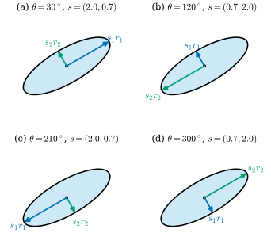
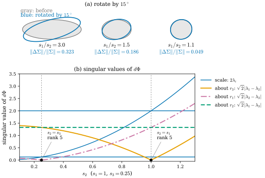
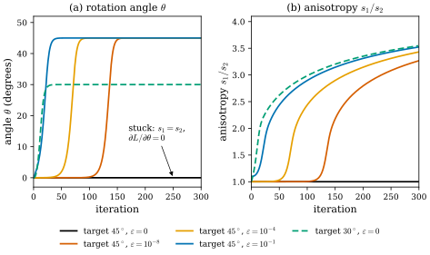

29.2 Parametrizing Covariances with Rotations and Scales
Goals
- 3DGS의 parametrization \(\Phi(R, s) = R\,\diag(s)^2R^{\mathsf T}\)를 \(\mathrm{SO}(3) \times \R^3_{\gt 0}\)에서 \(\mathrm{SPD}(3)\)으로 가는 smooth map으로 보고, surjective이지만 injective가 아님을 설명하며 같은 \(\Sigma\)를 주는 \((R, s)\)의 개수(24, quaternion으로는 48)를 셀 수 있다.
- \(d\Phi\)를 계산해 두 scale이 같아지는 곳에서 rank가 6에서 5로(모두 같으면 3으로) 떨어짐을 보이고, rotation의 gradient가 \(s_i^2 - s_j^2\)에 비례해 사라지는 이유를 설명할 수 있다.
- scale의 \(\exp\), opacity의 sigmoid, quaternion의 \(q/\abs{q}\)를 chart와 submersion의 말로 설명하고, Cholesky·matrix logarithm parametrization과 장단점을 비교할 수 있다.
Prerequisites
- Section 29.1: \(\Sigma = RSS^{\mathsf T}R^{\mathsf T}\) (29.1.4), level set의 축과 반축(Proposition 29.1.2)
- Section 0.6: differential = Jacobian matrix(Definition 0.6.5), \(\mathrm{SO}(3)\)와 \([\omega]_\times\), Rodrigues formula(Example 0.6.7), gimbal lock과 unit quaternion(In computer vision: 카메라 자세)
- Section 0.7: gradient는 covector이고 chain rule로 끌려온다
Motivation
Section 29.1에서 \(\Sigma = RSS^{\mathsf T}R^{\mathsf T}\)는 표준 Gaussian을 \(S\)로 늘이고 \(R\)로 돌린 것이었고, 그 분모 \(s_i^2 - s_j^2\)가 normal의 흔들림을 정했다. 이 절은 이 식을 학습의 관점에서 본다.
3DGS는 \(\Sigma\)의 성분 6개를 직접 최적화하지 않는다. gradient descent의 update는 \(\Sigma\)를 positive definite가 아닌 행렬로 쉽게 밀어내기 때문이다. 대신 scale vector와 quaternion을 따로 저장하고, 매번 \(\Sigma = RSS^{\mathsf T}R^{\mathsf T}\)를 만든다 [Kerbl23]. 그러면 어떤 \(\Sigma\)든 만들 수 있고 언제나 SPD다. 이 선택에는 대가가 있다. 질문은 셋이다.
- 같은 \(\Sigma\)를 주는 \((R, s)\)는 몇 개인가?
- parameter를 조금 바꿔도 \(\Sigma\)가 변하지 않는 곳, 곧 gradient가 사라지는 곳은 어디인가?
- \(\exp\), sigmoid, \(q/\abs{q}\) 같은 activation은 기하적으로 무엇이고, 다른 parametrization은 무엇이 다른가?
The Map \(\Phi\)
3DGS의 parametrization을 map 하나로 쓰자.
정의역은 3차원 manifold \(\mathrm{SO}(3)\)(Example 0.6.7)와 \(\R^3\)의 open set \(\R^3_{\gt 0} = \{s : s_i \gt 0\}\)의 곱이므로 6차원 manifold다. 공역 \(\mathrm{SPD}(3)\)은 symmetric matrix 전체 \(\mathrm{Sym}(3) \cong \R^6\)의 open set이므로 역시 6차원이다(Proposition 29.4.1). 성분은 다항식이므로 \(\Phi\)는 smooth map이다. Section 29.1의 spectral theorem에 의해 모든 \(\Sigma\)는 \(R\,\diag(\lambda_i)\,R^{\mathsf T}\) (\(R \in \mathrm{SO}(3)\))로 쓸 수 있으므로 \(\Phi\)는 surjective다. 자유도의 수도 \(3 + 3 = 6\)으로 맞는다. 그러면 \(\Phi\)는 \(\mathrm{SPD}(3)\)의 좋은 좌표, 곧 chart의 역(parametrization)일까? 아니다. 일대일이 아니고, rank가 떨어지는 곳이 있다.
Many \((R, s)\) Give the Same \(\Sigma\)
2차원에서 먼저 보자. ellipse 하나를 “어느 축을 첫째로 부르고, 각 축의 어느 끝을 + 쪽으로 부르느냐”는 마음대로 정할 수 있다.

Figure 29.2.1의 네 패널을 차례로 보자. ellipse는 그대로인데, (a)에서 장축의 오른쪽 위 끝을 가리키던 파란 \(s_1r_1\)이 (b)에서는 단축을, (c)에서는 장축의 반대쪽 끝을, (d)에서는 다시 단축을 가리킨다. 축의 이름을 바꾸면(\(r_1 \leftrightarrow r_2\)) scale도 따라 바뀌어야 하고(\(s_1 \leftrightarrow s_2\)), 축 하나의 부호를 뒤집으면 다른 축도 뒤집어야 \(\det R = 1\)이 유지된다. 3차원에서는 이 자유가 더 많다.
Proposition 29.2.1 (fibers of \(\Phi\)). \(\Sigma = \Phi(R, s)\)이고 \(s_1, s_2, s_3\)이 서로 다르다고 하자. 그러면 \(\Phi^{-1}(\Sigma)\)는 정확히 24개의 점
\[ (RP,\ s^P), \qquad P \in \mathcal{O} \]
으로 이루어진다. \(s^P\)는 \(s\)의 성분을 \(P\)에 맞게 다시 늘어놓은 것(\(\diag(s^P)^2 = P^{\mathsf T}\diag(s)^2P\))이다. 여기서 \(\mathcal{O}\)는 각 행과 각 열에 \(\pm 1\)이 하나씩 있고 나머지가 \(0\)이며 \(\det P = 1\)인 행렬(signed permutation matrix)의 모임으로, 원소가 24개다(정육면체를 제자리로 보내는 회전들). quaternion \(q \in S^3\)로 \(R\)을 나타내면 \(q\)와 \(-q\)가 같은 \(R\)을 주므로 같은 \(\Sigma\)를 주는 \((q, s)\)는 48개다.
Derivation. \(\Phi(R', s') = \Sigma\)이면 \(s_i'^2\)은 \(\Sigma\)의 eigenvalue이고 \(R'\)의 열은 그 eigenvector다. eigenvalue가 서로 다르면 eigenvector는 부호를 빼고 하나씩 정해지므로, \(R'\)의 열은 \(R\)의 열을 순서를 바꾸고 부호를 붙인 것, 곧 \(R' = RP\)이고 \(P\)는 signed permutation matrix다. \(\det R' = 1\)이려면 \(\det P = 1\)이어야 한다. 순서 \(3! = 6\)가지와 부호 \(2^3 = 8\)가지 가운데 절반이 \(\det P = 1\)이므로 \(6 \cdot 8/2 = 24\)개다. 반대로 이런 \(P\)는 \(P\,\diag(\lambda_{\pi(i)})\,P^{\mathsf T} = \diag(\lambda_i)\) 꼴로 맞춰지므로 모두 같은 \(\Sigma\)를 준다. 마지막으로 \(S^3 \to \mathrm{SO}(3)\)는 2대1이다(Section 0.6).
scale이 같은 것이 있으면 fiber는 더 커진다. \(s_1 = s_2 \ne s_3\)이면 \(r_1, r_2\)가 펼치는 평면 안의 어느 orthonormal basis도 eigenvector이므로, \(r_3\) 축 둘레로 \(R\)을 아무만큼 돌려도 \(\Sigma\)가 그대로다. fiber는 점이 아니라 원(circle)들의 합이 된다. \(s_1 = s_2 = s_3 = c\)이면 \(\Sigma = c^2I_3\)이므로 모든 \(R\)이 같은 \(\Sigma\)를 주고, fiber는 \(\mathrm{SO}(3)\) 전체다. 3DGS가 실제로 저장하는 것은 정규화하지 않은 \(q \in \R^4 \setminus \{0\}\)이므로(아래 (29.2.4)), 저장된 parameter로 보면 각 점이 다시 반직선 \(\{cq : c \gt 0\}\)으로 부푼다.
Where \(\Phi\) Loses Rank
fiber가 원으로 커지는 곳에서는 무한소의 일도 이상해진다. \((R, s)\)에서 \(d\Phi\)를 계산하자. rotation 쪽은 (0.6.7)의 곡선 \(t \mapsto R\exp(t[\omega]_\times)\)(\(R\) 자신의 축 \(r_k\)에 대한 성분 \(\omega_k\)로 돈다), scale 쪽은 3DGS처럼 log-scale \(\ell_i = \log s_i\)로 \(t \mapsto s_ie^{t\,\delta\ell_i}\)를 쓴다. \(\Lambda = \diag(\lambda_1, \lambda_2, \lambda_3)\), \(\lambda_i = s_i^2\), \(\Omega = [\omega]_\times\)로 두면
\[ \begin{aligned} \frac{d}{dt}\Big|_{t=0} R e^{t\Omega}\,\Lambda\,e^{-t\Omega}R^{\mathsf T} &= R(\Omega\Lambda - \Lambda\Omega)R^{\mathsf T}, \\ \frac{d}{dt}\Big|_{t=0}\big(s_ie^{t\,\delta\ell_i}\big)^2 &= 2\lambda_i\,\delta\ell_i \end{aligned} \]
이다. \((\Omega\Lambda - \Lambda\Omega)_{ij} = \Omega_{ij}(\lambda_j - \lambda_i)\)이므로, eigenframe(\(R\)의 열을 basis로 쓴 좌표)에서 \(\lambda_{ij} = \lambda_i - \lambda_j\)로 줄여 쓰면 \(d\Phi\)의 값은
이다. 읽는 법은 간단하다. scale은 대각 성분만, 축 \(r_k\) 둘레의 회전 \(\omega_k\)는 나머지 두 축 \(r_i, r_j\)가 만드는 비대각 성분 하나만 바꾸고, 그 크기는 \(\lambda_i - \lambda_j = s_i^2 - s_j^2\)에 비례한다. cross-section이 원인 축 둘레로 돌리면 아무것도 변하지 않는다.
Proposition 29.2.2 (rank of \(d\Phi\)). \((R, s)\)에서 \(d\Phi\)의 rank는 \(3 + (\text{서로 다른 } s_i\text{의 짝 } \{i, j\}\text{의 수})\)이다. 곧 \(s_i\)가 모두 다르면 6, 둘만 같으면 5, 셋이 모두 같으면 3이다. 정의역에는 좌표 \((\omega, \delta\ell) \in \R^6\)의 Euclidean inner product(\(\omega\)는 radian, \(\delta\ell\)은 log-scale의 변화)를, 공역 \(\mathrm{Sym}(3)\)에는 Frobenius inner product \(\tr(UV)\)를 쓰면 \(d\Phi\)의 singular value는 \(2\lambda_1, 2\lambda_2, 2\lambda_3\)과 \(\sqrt2\abs{\lambda_1 - \lambda_2}, \sqrt2\abs{\lambda_1 - \lambda_3}, \sqrt2\abs{\lambda_2 - \lambda_3}\)이다.
Derivation. (29.2.2)에서 여섯 parameter는 여섯 개의 서로 다른 성분(대각 3개, 비대각 3개)에 따로 들어간다. 따라서 \(d\Phi\)는 이 좌표에서 대각행렬처럼 작동하고, 각 parameter의 coefficient \(2\lambda_i\)와 \(\lambda_i - \lambda_j\)(비대각 성분은 행렬에 두 번 나오므로 Frobenius norm으로 \(\sqrt2\)배)가 singular value다. rank는 \(0\)이 아닌 coefficient의 수다.
singular value의 값은 어떤 inner product로 재느냐에 달려 있다. 예를 들어 scale을 \(\log s\) 대신 \(s\) 자체로 재면 scale 쪽 singular value는 \(2s_i\)가 된다(verify에서 확인). 그러나 rank, 곧 어느 coefficient가 \(0\)인지는 좌표와 inner product를 어떻게 골라도 같다. 아래의 결론(rotation 쪽이 \(s_i = s_j\)에서 \(0\)이 된다)은 그 사실에만 기댄다.

Figure 29.2.2의 (a)를 왼쪽에서 오른쪽으로 보자. 똑같이 \(15^\circ\)를 돌렸는데, 길쭉한 왼쪽 ellipse는 회색과 파랑이 크게 어긋나고 거의 둥근 오른쪽 ellipse는 거의 겹친다. 상대 변화는 \(\sqrt2\abs{\lambda_1 - \lambda_2}\sin 15^\circ/\|\Sigma\|_F\)로 0.323, 0.186, 0.049다. (b)는 같은 일을 3차원에서 무한소로 잰 것이다. \(s_2\)를 \(1\)에서 \(0.25\)까지 움직이면 주황 곡선(\(r_3\) 둘레 회전)은 \(s_2 = 1\)에서, 자주색 점쇄선(\(r_1\) 둘레 회전)은 \(s_2 = 0.25\)에서 바닥에 닿는다. 두 scale이 같아지는 바로 그 점에서 해당 회전의 singular value가 \(0\)이 되고 rank가 5로 떨어진다.
rank가 떨어진다는 것은 두 가지를 뜻한다. 첫째, kernel이 생긴다. parameter를 그 방향(\(r_3\) 둘레 회전)으로 움직여도 \(\Sigma\)가 변하지 않는다. 앞에서 본 원 모양의 fiber가 바로 그 방향이다. 둘째, image가 줄어든다. \(\mathrm{Sym}(3)\)의 6개 방향 가운데 하나(eigenframe에서 \((1, 2)\) 비대각 성분)는 지금의 \((R, s)\)에서 무한소로 움직여서는 만들 수 없다. 둥근 cross-section을 비스듬한 ellipse로 찌그러뜨리려면 먼저 \(R\)을 유한하게 돌려 두어야 한다.
gradient로 옮기면 이렇다. loss \(L\)의 \(\Sigma\)에 대한 gradient를 \(\Gamma = \partial L/\partial\Sigma\)(symmetric matrix)라 하면 chain rule에 의해 \(\partial L/\partial\omega_k = \tr\big(\Gamma\,\partial\Sigma/\partial\omega_k\big)\)이고, (29.2.2)에서
이다. loss가 무엇이든, \(\Sigma\)가 어느 쪽으로 변하기를 원하든, 축 \(r_k\) 둘레 회전의 gradient는 \(s_i^2 - s_j^2\)를 인수로 가진다. 두 scale이 같아지면 그 gradient는 정확히 \(0\)이다. quaternion의 gradient는 이것을 chain rule로 한 번 더 끌어온 것이므로(Section 29.5) 같은 인수를 가진다.
Verification: verify/v-29-2-covariance-parametrization.py
Example 29.2.3 (gradient descent from an isotropic start). 3DGS는 Gaussian을 isotropic으로, 곧 세 축의 scale을 가장 가까운 점 셋까지의 거리로 정한 같은 값으로 두고 초기화한다 [Kerbl23](논문은 평균 거리라고 쓰지만, 공식 구현은 가까운 세 점까지의 거리 제곱의 평균의 제곱근(RMS)을 쓰고, 그 세 점도 근사 kNN 탐색으로 찾는다). 공식 구현은 rotation을 항등 quaternion \((1, 0, 0, 0)\)으로 시작한다. 이 점에서 \(\Phi(R, (c, c, c)) = c^2I_3\)은 \(R\)에 의존하지 않으므로 \(d\Phi\)의 rank는 3이고, (29.2.3)의 rotation gradient는 세 성분 모두 정확히 \(0\)이다. rotation은 scale이 갈라진 뒤에야 움직인다.
얼마나 늦게 움직이는지를 2D 장난감 문제로 재 보자. parameter는 \((\theta, \log s_1, \log s_2)\), loss는 \(L = \tfrac12\|\Sigma - \Sigma^*\|_F^2\), 목표는 \(s^* = (2, 0.5)\)이고 장축이 \(45^\circ\) 또는 \(30^\circ\)인 Gaussian이다. 학습률 0.01의 plain gradient descent로, \(\theta = 0\), \(s = (1 + \varepsilon, 1)\)에서 시작한다.

Activations Are Charts (Almost)
3DGS가 실제로 최적화하는 수는 \((R, s)\)가 아니라 제약이 없는 실수들이고, activation이 그것을 \(\Phi\)의 정의역으로 보낸다 [Kerbl23].
그리고 unit quaternion \(\hat q = (q_0, v)\) (\(v \in \R^3\))에서 rotation matrix는
로 만든다. \(\hat q = (\cos\tfrac{\theta}{2}, \sin\tfrac{\theta}{2}\,a)\)(\(a\)는 unit vector)를 넣으면 이 식은 Rodrigues formula (0.6.7)의 \(\exp([\theta a]_\times)\), 곧 축 \(a\) 둘레로 각 \(\theta\)만큼의 회전과 같아진다 [Sola18].
- scale의 \(\exp\). \(\exp\colon \R \to \R_{\gt 0}\)은 diffeomorphism이다. 그 역 \(\log\)는 \(\R_{\gt 0}\) 전체를 덮는 chart 하나다. 그래서 \(\ell\)에 대해 어떤 update를 해도 \(s \gt 0\)이 유지되고, \(s \to 0\)은 \(\ell \to -\infty\), 곧 좌표의 무한히 먼 곳이 된다.
- opacity의 sigmoid. \(\R \to (0, 1)\)의 diffeomorphism이고, 그 역 logit \(o = \log\frac{\alpha}{1 - \alpha}\)이 chart다. \(\alpha = 0\)과 \(\alpha = 1\)은 무한히 멀다.
- quaternion의 정규화. \(q \mapsto q/\abs{q}\)는 \(\R^4 \setminus \{0\}\)(4차원)에서 \(S^3\)(3차원)으로 가는 map이므로 chart가 될 수 없다. 모든 점에서 differential이 surjective인 submersion(침몰)이고, 각 fiber는 반직선 \(\{cq : c \gt 0\}\)이다. loss는 \(\abs{q}\)를 보지 못하므로 \(q\) 방향의 gradient는 언제나 \(0\)이다. 이 여분의 차원이 학습에서 하는 일은 Section 29.5에서 본다. 그다음의 \(S^3 \to \mathrm{SO}(3)\)는 2대1인 local diffeomorphism이다.
정리하면 저장하는 parameter \((q, \ell) \in (\R^4 \setminus \{0\}) \times \R^3\)(7차원)는 \(S^3 \times \R^3\)를 거쳐 \(\mathrm{SO}(3) \times \R^3_{\gt 0}\)(6차원)로, 다시 \(\Phi\)로 \(\mathrm{SPD}(3)\)(6차원)으로 간다. scale이 모두 다른 일반적인 \(\Sigma\)의 fiber는 반직선 48개다.
Other Parametrizations: Cholesky and Matrix Logarithm
\(\Phi\)의 singularity는 축과 scale을 parameter로 쓴 대가이므로, 다른 parametrization과 비교해 볼 만하다.
- Cholesky. \(\Sigma = LL^{\mathsf T}\)이고 \(L\)은 대각 성분이 양수인 하삼각 행렬이다(여기와 Exercise 29.2.5에서만 \(L\)은 loss가 아니라 Cholesky factor다). 모든 SPD 행렬은 이런 \(L\)을 정확히 하나 가지고(Exercise 29.2.5), \(L \mapsto LL^{\mathsf T}\)는 6차원 open set \(\{L\}\)에서 \(\mathrm{SPD}(3)\)으로 가는 diffeomorphism이다. 대각 성분에 \(\exp\)를 쓰면 \(\R^6\) 전체가 parameter가 되고, fiber도 singularity도 없다. 대신 축과 scale이 보이지 않는다. normal을 얻거나 “납작하게” 만들려면 eigen decomposition을 다시 해야 하고, 장면을 회전하면 \(L\)이 단순하게 바뀌지 않는다(\(Q\Sigma Q^{\mathsf T}\)의 Cholesky factor는 일반적으로 \(QLQ^{\mathsf T}\)가 아니다).
- matrix logarithm. \(\Sigma = \exp(A)\)이고 \(A \in \mathrm{Sym}(3)\)다. 행렬 지수 \(\exp\colon \mathrm{Sym}(3) \to \mathrm{SPD}(3)\)는 diffeomorphism이므로 \(A\)는 \(\R^6\) 전체에서 자유롭다. 회전과도 맞물린다: \(\exp(QAQ^{\mathsf T}) = Q\exp(A)Q^{\mathsf T}\). 3DGS의 log-scale은 \(A = R\,\diag(2\ell_1, 2\ell_2, 2\ell_3)\,R^{\mathsf T}\)인 특수한 경우다. 단점은 축을 얻으려면 \(A\)를 대각화해야 하고, \(\exp\)의 differential 계산이 \(RSS^{\mathsf T}R^{\mathsf T}\)보다 복잡하다는 것이다. 이 좌표는 Section 29.4의 log-Euclidean metric [Arsigny06]과 직접 이어진다.
| parametrization | parameter 수 | fiber (일반적인 \(\Sigma\)) | rank가 떨어지는 곳 | 축·scale이 보이는가 |
|---|---|---|---|---|
| \((q, \log s)\), 3DGS | 7 | 반직선 48개 | \(s_i = s_j\) | 그대로 보인다 |
| Cholesky \(L\) | 6 | 1점 | 없음 | eigen decomposition 필요 |
| matrix log \(A\) | 6 | 1점 | 없음 | \(A\)의 eigen decomposition 필요 |
Summary
- 3DGS의 covariance는 \(\Phi(R, s) = R\,\diag(s)^2R^{\mathsf T}\)로 만든다. \(\Phi\colon \mathrm{SO}(3) \times \R^3_{\gt 0} \to \mathrm{SPD}(3)\)는 6차원에서 6차원으로 가는 surjective smooth map이다.
- injective가 아니다. scale이 모두 다르면 같은 \(\Sigma\)를 주는 \((R, s)\)가 24개(signed permutation), quaternion으로는 48개다. scale이 같으면 fiber가 원이나 \(\mathrm{SO}(3)\) 전체로 커진다.
- \(d\Phi\)는 eigenframe에서 (29.2.2)이고, 축 \(r_k\) 둘레 회전은 \(\Sigma\)를 \(s_i^2 - s_j^2\)에 비례해서만 바꾼다. rank는 6, 5, 3이고, rotation gradient는 두 scale이 같아지면 \(0\)이다((29.2.3)). isotropic으로 초기화한 Gaussian의 rotation은 scale이 갈라진 뒤에야 움직인다.
- \(\exp\)와 sigmoid는 chart(의 역)이고, \(q/\abs{q}\)는 반직선을 fiber로 가진 submersion이다. Cholesky와 matrix logarithm은 singularity가 없는 대신 축이 보이지 않는다.
- \((q, s)\)를 성분별로 평균·보간하면 대표의 선택에 따라 답이 달라진다. \(\Sigma\)의 공간에서 해야 한다.
다음 절에서는 3D Gaussian을 화면으로 보내는 과정을 본다. world에서 camera로 가는 affine map은 Gaussian을 정확히 Gaussian으로 보내지만 perspective projection은 그렇지 않다. splatting의 \(JW\Sigma W^{\mathsf T}J^{\mathsf T}\)는 그 differential로 만든 1차 근사이고, 그 오차를 잰다.
Quick check
Exercise 29.2.1 ★ \(s = (3, 2, 1)\)일 때 \(\Phi(R, s) = \Phi(R', s')\)이고 \(R' \ne R\)인 \((R', s')\)를 하나 쓰고 확인하여라. \(s = (3, 3, 1)\)이면 같은 \(\Sigma\)를 주는 \((R', s')\)는 몇 개인가?
Solution
\(Z = \begin{pmatrix} 0 & -1 & 0 \\ 1 & 0 & 0 \\ 0 & 0 & 1 \end{pmatrix}\)(\(z\)축 둘레 \(90^\circ\), \(\det Z = 1\))로 \(R' = RZ\), \(s' = (2, 3, 1)\)이라 하자. \(Z\,\diag(4, 9, 1)\,Z^{\mathsf T}\)는 첫째 열 \(e_2\)에 4, 둘째 열 \(-e_1\)에 9를 붙인 것이므로 \(\diag(9, 4, 1)\)이고, 따라서 \(R'\,\diag(4, 9, 1)\,R'^{\mathsf T} = R\,\diag(9, 4, 1)\,R^{\mathsf T}\)이다. \(s = (3, 3, 1)\)이면 무한히 많다. \(r_3\) 둘레로 아무만큼 돌린 \(R\exp(t[e_3]_\times)\)가 모두 같은 \(\Sigma\)를 주므로 fiber는 원(들)의 합이다.
Verification: verify/v-29-2-covariance-parametrization.py
Exercise 29.2.2 ★ \(s = (2, 2, 0.5)\)인 Gaussian에서 \(d\Phi\)의 rank는 얼마인가? 어느 축 둘레의 회전이 \(\Sigma\)를 바꾸지 않고, 이 Gaussian은 어떤 모양인가?
Solution
Proposition 29.2.2에서 서로 다른 scale의 짝은 \(\{1, 3\}\), \(\{2, 3\}\) 둘이므로 rank는 \(3 + 2 = 5\)다. (29.2.2)에서 \(\omega_3\)의 coefficient가 \(\lambda_1 - \lambda_2 = 0\)이므로 \(r_3\) 둘레의 회전이 \(\Sigma\)를 바꾸지 않는다. 모양은 반지름 2인 둥근 disk(두께 0.5)이고, \(r_3\)은 그 normal이다. normal은 잘 정해지지만(Exercise 29.1.5) disk 안의 축은 정해지지 않는다.
Verification: verify/v-29-2-covariance-parametrization.py
Exercise 29.2.3 ★★ \(\partial\Sigma/\partial\omega_3 = R\big([e_3]_\times\Lambda - \Lambda[e_3]_\times\big)R^{\mathsf T}\)를 성분으로 계산하고 \(\|\partial\Sigma/\partial\omega_3\|_F = \sqrt2\abs{s_1^2 - s_2^2}\)임을 보여라. 왜 이 값이 \(s_3\)에 의존하지 않는가?
Solution
\([e_3]_\times = \begin{pmatrix} 0 & -1 & 0 \\ 1 & 0 & 0 \\ 0 & 0 & 0 \end{pmatrix}\)이고 \(([e_3]_\times\Lambda - \Lambda[e_3]_\times)_{ij} = ([e_3]_\times)_{ij}(\lambda_j - \lambda_i)\)이므로 \((1, 2)\) 성분은 \(-1 \cdot (\lambda_2 - \lambda_1) = \lambda_1 - \lambda_2\), \((2, 1)\) 성분은 \(1 \cdot (\lambda_1 - \lambda_2)\)이고 나머지는 \(0\)이다. Frobenius norm은 \(R\)을 곱해도 변하지 않으므로 \(\sqrt{2(\lambda_1 - \lambda_2)^2} = \sqrt2\abs{s_1^2 - s_2^2}\)이다. \(r_3\) 둘레로 돌리면 \(r_3\) 방향은 그대로이고 \(r_1, r_2\) 평면 안에서만 축이 돌기 때문에 \(s_3\)은 상관이 없다.
Verification: verify/v-29-2-covariance-parametrization.py
Exercise 29.2.4 ★ 위 상자의 두 표현 \((q_1, s) = \big((1, 0, 0, 0), (2, 1, 1)\big)\), \((q_2, s) = \big((\cos 45^\circ, 0, 0, \sin 45^\circ), (1, 2, 1)\big)\)이 모두 \(\diag(4, 1, 1)\)을 줌을 확인하고, 성분별 평균 \(\big(\tfrac{q_1 + q_2}{2}, \tfrac{s_1 + s_2}{2}\big)\)가 주는 \(\Sigma\)를 구하여라.
Solution
\(q_1\)은 항등 회전이므로 \(\diag(4, 1, 1)\)이다. \(q_2\)는 (29.2.5)에서 \(z\)축 둘레 \(90^\circ\) 회전 \(Z\)이고, \(Z\,\diag(1, 4, 1)\,Z^{\mathsf T}\)는 \(Ze_1 = e_2\)에 1, \(Ze_2 = -e_1\)에 4를 붙인 것이므로 \(\diag(4, 1, 1)\)이다. 평균한 quaternion \((1 + \cos 45^\circ, 0, 0, \sin 45^\circ)/2\)를 정규화하면 반각이 \(\arctan\frac{\sin 45^\circ}{1 + \cos 45^\circ} = 22.5^\circ\)이므로 \(z\)축 둘레 \(45^\circ\) 회전이고, scale은 \((1.5, 1.5, 1)\)이다. \(xy\) 평면에서 scale이 같으므로 회전은 상관없고 \(\Sigma = \diag(2.25, 2.25, 1)\)이다. 장축 길이가 2인 ellipsoid 둘의 “평균”이 반지름 1.5의 둥근 disk가 되었다.
Verification: verify/v-29-2-covariance-parametrization.py
Exercise 29.2.5 ★★ 2차원에서 \(\Sigma = \begin{pmatrix} a & b \\ b & c \end{pmatrix}\)가 SPD이면, 대각 성분이 양수인 하삼각 행렬 \(L\)로 \(\Sigma = LL^{\mathsf T}\)인 것이 정확히 하나 있음을 보여라. \(\Sigma = \begin{pmatrix} 4 & 2 \\ 2 & 2 \end{pmatrix}\)의 \(L\)은 무엇인가? 같은 \(\Sigma\)를 주는 \((\theta, s)\)는 몇 개인가?
Solution
\(L = \begin{pmatrix} l_{11} & 0 \\ l_{21} & l_{22} \end{pmatrix}\)이면 \(LL^{\mathsf T} = \begin{pmatrix} l_{11}^2 & l_{11}l_{21} \\ l_{11}l_{21} & l_{21}^2 + l_{22}^2 \end{pmatrix}\)이다. \(a \gt 0\)이므로 \(l_{11} = \sqrt a\)(양수 조건으로 하나), \(l_{21} = b/\sqrt a\), 그리고 \(c - b^2/a = \det\Sigma/a \gt 0\)이므로 \(l_{22} = \sqrt{c - b^2/a}\)로 하나씩 정해진다. \(\Sigma = \begin{pmatrix} 4 & 2 \\ 2 & 2 \end{pmatrix}\)이면 \(L = \begin{pmatrix} 2 & 0 \\ 1 & 1 \end{pmatrix}\)이다. eigenvalue \(3 \pm \sqrt5\)가 서로 다르므로 \((\theta, s)\)는 \(\theta\)를 \(2\pi\)로 보면 4개다(Figure 29.2.1). Cholesky는 fiber가 한 점이고, 축-scale parametrization은 4개(3D에서는 24개)다.
Verification: verify/v-29-2-covariance-parametrization.py